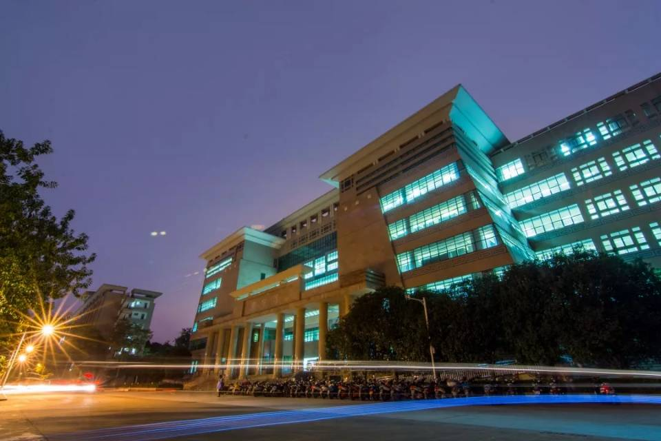

1928.6
广西大学在梧州蝴蝶山诞生啦！马君武先生任校长。
广西大学地处八桂之乡，钟灵毓秀，人杰地灵。“973”项目首席科学家、“万人计划”领军人才、“长江学者”、国家“百千万人才工程”人选、国家“杰出专业技术人才”、等名师大家助力广西大学钻研学术研究，并获得显著建设性成果。
1999
学校获批进入国家"211工程"项目建设学校行列
下设27个学院，有98个本科专业，学科涵盖哲、经、法、教、文、理、工、农、医、管、艺等11大学科门类。博士点、硕士点等学位点众多。
教学楼拥有完备的多媒体教学设施；校图书馆安装有供暖设备、供水设施、电梯等，座位预约系统完善；综合楼实验设施齐全；体育场、体育馆运动娱乐设备多样化；宿舍安装有空调、热水供应设备、风扇、洗衣机、烘干机等基础设施，等等。
2018.5
西大九十华诞之际，入选广西一流学科建设高校。
校园环境优美，风景如画，长夏无冬；绿树成荫，荷花飘香；湖泊波光粼粼，清澈见底；校道干净整洁，通畅无阻；建筑别具匠心，错落有致。致力于打造温馨和谐的成才家园，培养德智体美劳全面发展的优秀西大人，让每一位西大学子都能人尽其才。
2019年12月8日晚，广西大学于西体隆重举办了庆祝90周年校庆的晚会。晚会以“水润花开”为主题，用“秋之浪漫”“冬之誓言”“春之希望”“夏之激昂”四个篇章，生动讲述了西大90年来走过的风风雨雨。九十周年校庆标识和舞台灯光效果让人眼前一亮。情景短剧讲述了广西大学在抗战时期办学的艰苦历程，演员们饱含深情的语句让我们为之动容。来自贵州省榕江县的小朋友们为我们带来了他们的榕江山歌，用稚嫩的嗓音诉说着榕江县和西大的不解之缘。由西大后勤相关单位为我们带来的音乐短剧使现场的气氛高涨，
欢快的音乐和标志性的“南普”让观众们情不自禁的开怀大笑。
武汉大学、中山大学、中南大学、湖南大学等9所高校代表带来了歌曲节目，为西大献上了他们的祝福。国际学院带来的歌舞秀表演让我们感受到留学生们对西大的情感。深情的吉他弹唱让人沉醉，当吉他上的小彩灯亮起的一瞬间，整个舞台都变得温柔起来。
整齐划一的动作，青春活力的舞姿，精彩的啦啦操表演让观众们大饱眼福。
全体演员带来的合唱标志着晚会的圆满结束。晚会现场虽下着雨，却熄不灭西大人内心的热情。最后演出在欢呼声与掌声中圆满结束我们衷心祝愿西大的明天更加光辉灿烂！
烟雨西大
陈阳
正是二、三月，春雨绵绵，从空中飘落，如银丝，如柳絮，如轻纱。像雾似的雨,像雨似的雾,丝丝缕缕缠绵不断。在细雨朦胧中漫步在风景如画的西大，别有一番诗意。
焕然一新的正门，气势磅礴，守卫着这片充满朝气的乐土，彰显着西大莘莘学子英姿飒爽、壮志凌云的风采。那龙飞凤舞的“广西大学”，是毛主席为西大写下的祝语，如龙遨游，如凤飞舞。
一座座伟人雕像，记录了几十年来他们在风雨兼程中为西大的发展壮大作出的卓越贡献。那屹立的君武像，隔着朦胧烟雨，默默注视着茁壮成长的西大学子，虔诚祝福西大。
九十年前，梧州的蝴蝶山上，马君武先生创建了广西大学。肩负着复兴中华，发达广西的历史使命，在战火纷飞中毅然前行。九十年后，君武学堂、君武馆为西大培养了代代精英，君武先生的精神在这里传承、发扬！
密密匝匝的雨丝似合着舞曲的精灵，在空中飞舞，飞舞。从远望去，综合楼有三级明显的分层，从底下往上分别象征着学士帽、硕士帽和博士帽，寓意着西大学子在学习上的拾级而上，步步高升。迎着雨的旋律，穿过综合楼，缕缕清风瞬时迎面扑来，送来了春的气息。
大礼堂与综合楼相对而立，门前两排笔直的槟榔树在风中飒飒作响，絮絮低语，诉说着西大九十年来的辉煌岁月。大礼堂采用法式风格，古典柱廊和高大的三角山花气势如虹，其前身是原育才学校。越法抗战胜利后，旨在为越南培养大批急需干部和为胜利后重建国家准备科技人才。昔日的育才学院，如今的大礼堂，都是西大的骄傲，为西大增光添彩！
丝丝春雨，习习寒气，飘落在脸颊上，冰凉冰凉的。任风雨再寒冷，也抵挡不住西大学子对学习的热情。此刻图书馆内已是人来人往，他们怀着憧憬，怀着热情，投入到学习当中去。图书馆的布局融入了广西壮族壮锦和苗族高脚楼的特色，馆内设备先进，藏书浩如烟海，为西大学子们提供了一个舒适便捷的学习环境。
图书馆内还设有校史馆，一尊尊雕像，一幅幅照片，一个个物件，无不透露着历史的沧桑感。历经停办、改组、迁徙、合并、重建，非但不能使西大衰颓，反而日益茁壮成长，蒸蒸日上。
图书馆门前是时光广场，芳草萋萋，绿树成荫，鸟语花香，景色宜人。带着湿气的春风吹过，吹醒了万物。绿树长出嫩芽，小草伸直了腰，花儿露出了灿烂的笑脸。草地上的小虫子也蠢蠢欲动，平静的表面下孕育着磅礴的朝气。
走过四季更迭，见过万千美景，遇见无数人生，最喜欢的还是西大的春夏秋冬，西大的诗意风景，西大的莘莘学子。西大的历史，西大的人文，西大的美景，令我如痴如醉。
雨还在飘，风还在吹，模糊了眼，凌乱了发。在烟雨朦胧中，看到了战火纷飞中傲然挺立的西大，看到了历经磨难却屹立不倒的西大，看到了逐梦百年的西大。
九十载春秋，九十载风雨，不忘初心，奋勇前行。

置顶
西大历史
精彩晚会
绿叶述说
烟雨西大